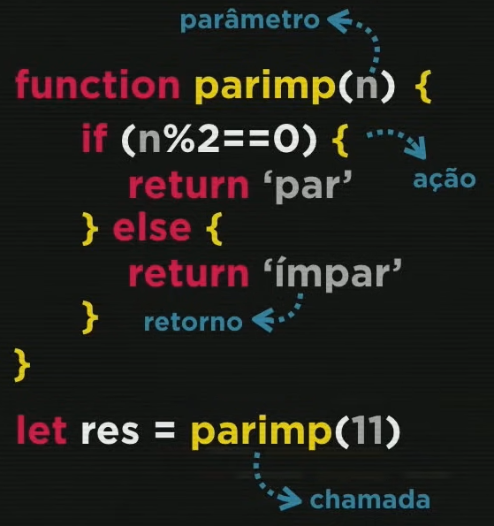
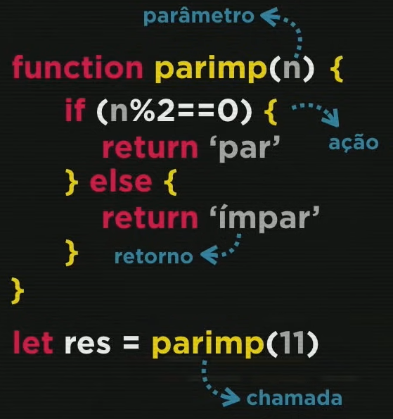

Operadores
Tipos de operadores:
- Aritméticos
- Atribuição
- Relacionais
- Lógicos
- Ternários
Aritméticos
Operadores aritméticos binários:
- + = Adição
- - = Subtração
- * = Multiplicação
- / = Divisão de número real (número com vírgula)
- % = Divisão de número inteiro (número sem vírgula) o resultado da operação é o resto
- ** = Potência
Exemplo:
- 5 + 2 = 7
- 5 - 2 = 3
- 5 * 2 = 10
- 5 / 2 = 2.5
- 5 % 2 = 1
- 5 ** 2 = 25
Ordem de Precedência das operações:
- ()
- **
- * / %
- + -
Simplificação
Caso uma variável chame ela mesma na operação, é possível usar o +=
Exemplo:
var n = 3
- n = n + 4
- n = n - 5
- n = n * 4
- n = n / 2
- n = n % 5
- n = n ** 2
O código passa a ficar:
- n += 4
- n -= 5
- n *= 4
- n /= 2
- n %= 5
- n **= 2
Incremento
Utilizada para adicionar 1 ou para subtrair 1.
- n++ = Soma +1 à variável n
- n-- = Subtrai -1 à variável n
Atribuição
Atribuição Simples
Exemplo:
- a = 5 + 3 - (8)
- b = a % 5 - (3)
- c = 5 * b ** 2 - (45)
- d = 10 - a / 2 - (6)
- e = 5 + 3 - (2)
- f = b % e + 4 / e - (3)
Relacionais
Tipos relacionais:
- > - Maior que
- <- Menor que
- >= - Maior ou igual que
- <=- Menor ou igual que
- == - Igual
- != - Diferente
NOTA: Todo o resultado de uma operação Relacional é Bouleano, pois o resultado será Verdadeiro ou Falso.
Identidade
Para verificar se as variáveis são idênticas ou desigual restrito, ou seja, se são iguais no valor e no tipo.
- === - Idêntico
- !== - Desigual restrito
Lógicos
- ! = Negação
- && = Conjunção
- || = Disjunção
Ternário
Realizar o teste lógico e informa o resultado verdadeiro ou falso.
- ? - Verdadeiro
- : - Falso
Exemplo 1:
var x = 6
var y = 9
x >= y ?'Sim' :'Não'
Sim
Exemplo 2:
var media = 6
var nota = 5
nota >= media ?'Aprovado' :'Reprovado'
'Reprovado'
Tipos Primitivos
- number
- infinity
- NaN
- string
- boolean
- null
- undefined
- object
- array
- function
Para saber qual o tipo a variável, basta digitar no node.js:
typeof (nome da variável)
O sinal "+" é utilizado para somar e para concatenar:
- Adição: Utilizada para variáveis number, soma números.
- Concatenação: Junta o texto com a informação da variável.
Number
Para definir se será número inteiro ou real temos as opções:
- var n1 = Number.parseInt(n) - Para números inteiros (1,2,3...)
- var n1 = Number.parseFloat(n) - Para números reais (1.3,2.4,3.8 ...)
Obs.: Caso possa ser utilizado tanto o número inteiro, quanto o real, pode ser utilizado apenas Number(n).
Transformações
Transformação de Number para String e vice-versa
Conversão de número para string:
- String(n)
- n.toString()
Conversão de string para número:
var a = Number(n.value)
Transformação da moeda
Para transformar a moeda de acordo com cada país, há o exemplo abaixo:
var n1 = 1200.5
n1.toFixed(2) - Para que os centavos fiquem certos = 1200.50
n1.toLocaleString('pt-BR', {style: 'currency' currency:'BRL'}) - Para ficar na moeda Real = R$ 1,200.50
n1.toLocaleString('pt-BR', {style: 'currency' currency:'USD'}) - Para ficar na moeda Dolar = US$ 1,200.50
n1.toLocaleString('pt-BR', {style: 'currency' currency:'EUR'}) - Para ficar na moeda Euro = € 1,200.50
Obs.: o 'pt-BR' é a informação de onde a informação está sendo retirada.
Nota: Para substituir um termo por outro utiliza-se o código abaixo:
n1.toFixed(2).replace('.', ',') - R$ 1200,50
Formatações
Formatação de String
Pode ser utilizada duas formas, Concatenação e Template String.
Exemplo:
var s = JavaScript
- Concatenação: 'Eu estou aprendendo ' + s
- Template String: ´Eu estou aprendendo ´ ${s}
Nota: ${s} significa placeholder
Formatação de conteúdo
Para saber a quantidade de letras que um texto possui é utilizado o .leng
Para deixar um texto em maiúsculo é utilizado o .toUpperCase()
Para deixar um texto em minúscolo é utilizado o .toLowerCase()
Exemplo:
var nome = window.prompt('Qual o seu nome?')
document.write(´Olá, ${nome}! Seu nome tem ${nome.leng}´)
document.write(´Olá, seu nome em maiúscula é ${nome.toUpperCase()}´)
document.write(´Olá, seu nome em maiúscula é ${nome.toLowerCase()}´)
DOM
DOM é um acrônimo para Modelos de Objetos para Documentos:
- D = Document
- O = Object
- M = Modal
Conjunto de objetos dentro do navegador que dará acesso aos componentes internos do website.
Está presente quando está rodando o JS dentro no navegador.
Árvore DOM

É possível selecionar o elemento de cinco formas:
Marca (tag)
- getElementsByTagName()
ID
- getElementById()
Nome
- getElementsByName()
Classe
- getElementsByClassName()
Seletor
- querySelector()
- querySelectorAll()
Para utilizar o querySelector, é preciso indicar a tag e o nome da class/id.
Exemplo:
var d = window.document.querySelector('div.msg')
Quando houver mais de um elemento com a mesma tag, nome ou classe, é necessário indicar qual elemento deve ser utilizado.
Exemplo:
var p1 = window.document.getElementsByName('p')[0]
document.write(p1.innerHTML)
Obs.: O primeiro elemento é [0], o segundo [1], e assim por diante.
Para alterar a formatação de alguma variável, é preciso separar os elementos por '.'
Exemplo:
d.style.backgroud = 'dark'
Eventos DOM
Se trata de tudo o que pode acontecer com o elemento.
Para exibir diversos parágrafos no JS, é utilizado o +=
Exemplo:
dados.innerHTML = ` <p>Seu nome é ${nome}, e você tem ${idade} anos. </p>`
dados.innerHTML += ` <p>Você gosta de ${hobby1} e ${hobby2}. </p>`
Condições
Condição Simples
Quando há apenas uma condição. Não há necessidade de utilizar o "else".
Condição Composta
Quando há mais de uma condição.
Condição Aninhada
Dentro de uma "else" pode ter outros "if" e "else".
Condição Múltipla
Utilizada quando houver mais de duas opções.
Exemplo:
switch (diaSemana) {
case 0:
console.log('Domingo')
break
case 1:
console.log('Segunda')
break
case 2:
console.log('Terça')
break
case 3:
console.log('Quarta')
break
case 4:
console.log('Quinta')
break
case 5:
console.log('Sexta')
break
case 6:
console.log('Sábado')
break
default:
console.log('[ERRO] Dia da semana inválido!')
}
Obs.: É importante utilizar o breake, caso contrário, serão executadas todas as linhas até o final.
Estrutura de Repetição
Estrutura de repetição com teste lógico no início
Utilizamos o while para que uma repetição aconteça Enquanto determinada condição for verdadeira.
Exemplo:
var c = 1
while (c >=6 ) {
console.log(`Passo ${c}`)
c++
}
Estrutura de repetição com teste lógico no final
Utilizamos o do e o while para que uma repetição seja feita Enquanto determinada condição for verdadeira.
Exemplo:
var c = 1
do {
console.log(`Passo ${c}`)
c++
} while (c >=6 )
Estrutura de repetição com variável de controle
for (inicialização ; teste lógico ; incremento) {
console.log(`... ${...}`)
}
Exemplo:
for (var c = 1; c >=6 ; c++) {
console.log(`Passo ${c}`)
}
Variáveis
Variáveis Simples
Armazenam apenas um valor por vez.
Variáveis Compostas
São capazes de armazenar vários valores em uma mesma estrutura.
Variável composta = array = vetor
Estrutura da array:
var n = [ x , x , x ]
Para incluir uma nova variável em determinada posição, sem precisar inserir na array, é utilizado o código n[0] = 0.
Exemplo:
var num = [5 , 8 , 3]
num[3] = 6
No exemplo acima a variável foi inserida na quarta posição, ficando da seguinte forma:
Para incluir uma nova variável no final da lista, sem precisar inserir na array, é utilizado o código n.push(0).
Exemplo:
var num = [5 , 8 , 3]
num.push(7)
No exemplo acima a variável foi inserida no final da lista, ficando da seguinte forma:
Para verificar quantas veriável há no array, é utilizado o código n.length.
Para ordenar as variáveis em ordem crescente, é utilizado o código n.sort().
Para verifcar em qual posição determinada variável está, é utilizado o código: n.indexOf(0).
Obs.: Caso não tenha o valor indicado, o JS retornará o valor -1.
For in
Para exibir todas as variáveis que há no vetor é utilizado:
var n = [1 , 2 , 3 , 4 , 5]
for (pos in n) {
console.log(`A posição ${pos} tem o valor ${n[pos]}`)
}
No exemplo acima lemos: Para todo pos em n.
Pode ser utilizada também o for:
for(pos=0 ; pos <n.length ; pos++){
console.log(`A posição ${pos} tem o valor ${n[pos]}`)
{
Objeto
Funções / Funcionalidades
São ações executadas assim que são chamadas ou em decorrência de um evento.
Uma ação pode receber parâmetros e retornar um resultado.
Chamada -
Parâmentros - São as entradas.
Ação - Todo o processo
 

É possível deixar resultados pré-definidos, para o caso de não ser inserido um valor.
Exemplo:
function somar(n1 = 0, n2 = 0) {
return n1 + n2
}
Ex.1 - console.log(somar(2, 9))
Ex.2 - console.log(somar(2))
Ex.1 - Apresentará o resultado: 11.
Ex.2 - Apresentará o resultado: 2 (2+0).
Pode ser criada uma function dentro de uma variável.
Exemplo:
var v = function (x) {
return x*2
}
console.log(v(5))
Apresentará o resultado: 10
Recursividade
Quando a function chama ela mesma.
Exemplo:
function fatorial(n) {
if (n == 1) {
return 1
} else {
return n * fatorial(n - 1)
}
}
console.log(fatorial(5))
Propriedades
Datas e Horas
Para inserir datas e/ou horas atuais, é preciso utilizar o new Date() e em seguida inserir o código necessário.
Exemplo:
var agora = new Date()
var hora = agora.getHours()
var minuto = agora.getMinutes()
console.log(`Agora são ${hora}:${minuto} horas.`)
if (hora < 6) {
console.log( 'Boa madrugada!')
} else if (hora>= 6) {
console.log('Bom dia!')
} else if (hora <=18) {
console.log( 'Boa tarde!')
} else { console.log( 'Boa noite!')
}
length
Utilizada para verificar o tamanho ou a quantidade de uma string ou de um array.
Exemplo 1:
if(senha.length <6) {
console.log('A senha precisa ter pelo menos 6 caractes')
}
Exemplo 2:
if (fano.value.length == 0 || Number(fano.value) > ano) {
window.alert('[ERRO] Verufique os dados e tente novamente!')
}
Focus
Utilizado para que o campo continue selecionado.
Exemplo:
n.focus()
Campo vazio
Para deixar um campo vazio ou "limpar", basta inserir ' '
Exemplo:
n.value = ' '
Buscar palavras
Para verificar se um texto possui uma palavra específica, podemos usar o método includes(), passando como argumento a palavra a ser verificada, que retorna um valor true se encontrar a palavra, e falso se não, lembrando sempre que o método é case sensitive.
Exemplo:
let frase = 'Eu quero viver a vida!'
console.log(frase.includes("vida"))
Inclusão e seleção de elementos pelo JS
Inclusão de elementos pelo JS
Para incluir elementos pelo JS é preciso criar uma variável para o elemento e inserir o tipo do elemento entre: (' ')
Exemplo 1:
var img = document.createElement('img')
Exemplo 2:
let lista = document.createElement('option')
lista.text = `Valor ${n} adicionado.`
lista.value = `num ${n} `
numeros.appendChild(lista)
Inclusão de atributos nos elementos pelo JS
Após a criação da variável para o elemento, é necessário indicar o tipo de atributo e sua identificação.
Exemplo:
img.setAttribute('id', 'foto')
Seleção de elemento pelo JS
Para selecionar um elemento específico quando há vários elementos desse mesmo tipo, utilizamos [0], [1], e assim por diantes.
Exemplo:
if (var1[0].checked) {
var2 = 'Homem'
}
else if (var1[1].checked) {
var2 = 'Mulher'
}
Formatação pelo JS
Caso cada evento tenha uma formatação específica, imagem, cor, etc., é importante especificar qual o item.
Exemplo:
if (hora >= 4 && hora < 12) {
img.src='imagens/manha.png'
document.body.style.background='#E6D5AB'
} else if (hora>= 12 && hora >=18) {
img.src='imagens/tarde.png'
document.body.style.background='#FAAA41'
} else {
img.src='imagens/noite.png'
document.body.style.background='#648096'
}
Emojis
Para inserir o emoji, é preciso substituir U+ por \u e deixar restante do código entre {}.
Exemplo:
De: U+1F600
Para: \u{1F600}